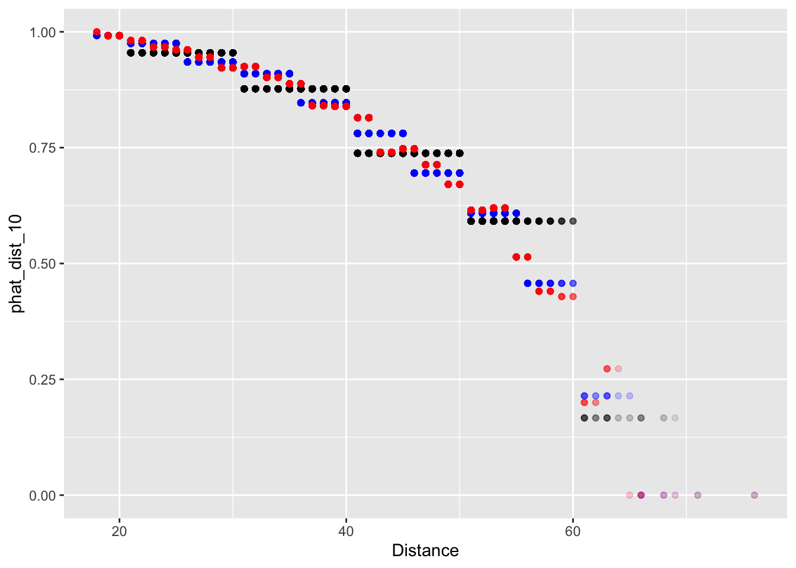

Lecture 7: More About Regression
In Lecture 5 and Lecture 6, we started building a model for predicting a baseball player’s 2015 batting average using his 2014 batting average. We found that some models, even though they fit the data quite well, appeared to overfit and may not predict future observations well. We will switch gears a little bit and discuss how to diagnose overfit issues using data on field goals in the NFL.
Training and Testing Paradigm
Suppose we have fit a whole bunch of models to a given dataset. How should we choose which model is the best? One strategy might be to see how well the models predict the data we used to fit them. While this seems intuitive, we saw in Lecture 5 that it is possible to “over-learn” the patterns in this training data.
A common alternative is to instead split our original dataset into two parts: a training set and a testing set. We fit all of our models on the training set and then see how well they predict the values in the testing set.
Field Goal Success in the NFL
The file “nfl_fg_train.csv” contains a large dataset about field goals attempted in the NFL between 2005 and 2015. We will train several models of field goal success with this data and then evaluate their predictive performance using the data contained in “nfl_fg_test.csv”.
> library(tidyverse)
> fg_train <- read_csv("data/nfl_fg_train.csv")
Parsed with column specification:
cols(
Team = col_character(),
Year = col_double(),
GameMinute = col_double(),
Kicker = col_character(),
Distance = col_double(),
ScoreDiff = col_double(),
Grass = col_logical(),
Success = col_double()
)The simplest forecast for field goal success probability is the overall average success rate. This forecast does not differentiate between players or attempt to adjust for distance or other game contexts. To compute this forecast, we need to find the average of the data in the column “Success.” The code below adds a column to the tbl called “phat_all”
It turns out that kickers make just over 83% of their attempts. However, we know that there are some truly elite kickers (e.g. Dan Bailey, formerly of the Cowboys) who make well over 83% of their attempts. Instead of forecasting field goal success probabilites with the overall average, we could instead use compute each individual kicker’s conversion rate. This can be done using group_by() and mutate(). In the code below, we add a column to fg_train called “phat_kicker”, whichcontains each kicker’s individual field goal coversion rate. Notice that because we adding a grouping to carry out this computation, we need to remove the grouping using ungroup() when we’re done.
> fg_train <-
+ fg_train %>%
+ group_by(Kicker) %>%
+ mutate(phat_kicker = mean(Success)) %>%
+ ungroup()Intuitively, distance is one of the main determinants of whether a kicker makes a field goal. We will use the cut() function to bin the data according to distance and then compute the conversion rate (averaged over all kickers) within each bin. In our dataset, the shortest field goal attempt was 18 yards and the longest was 76. We will begin by binning our data into 10 yard increments, 10 – 20, 20 – 30, …, 70 – 80. We then save the bin label in a column called “Dist_10” and the predictions in a column called “phat_dist_10”.
> fg_train <-
+ fg_train %>%
+ mutate(Dist_10 = cut(Distance, breaks = seq(from = 10, to = 80, by = 10))) %>%
+ group_by(Dist_10) %>%
+ mutate(phat_dist_10 = mean(Success)) %>%
+ ungroup()We can now look at a scatter plot of distance and our forecasts “phat_dist_10” Since there are many attempts from certain yardages, we’ll use alpha-blending (see Lecture 2 for a refresher on this!) to change change the transparency of the points according to their frequency. It certainly looks like our predictions make some intuitive sense: the estimated probability of making a field goal decreases as the distance goes up.
> fg_plot <- ggplot(fg_train) +
+ geom_point(aes(x = Distance, y = phat_dist_10), alpha = 0.2)
> fg_plot
We could also have binned the Distance into 5-yard increments or 2-yard bins, saving the bin labels into a column called “Dist_5” or “Dist_2”, and adding a column to fg_train that computes the overall conversion rate within each of these 5-yard or 2-yard bins.
> fg_train <-
+ fg_train %>%
+ mutate(Dist_5 = cut(Distance, breaks = seq(from = 10, to = 80, by = 5))) %>%
+ group_by(Dist_5) %>%
+ mutate(phat_dist_5 = mean(Success)) %>%
+ ungroup()
> fg_train <-
+ fg_train %>%
+ mutate(Dist_2 = cut(Distance, breaks = seq(from = 10, to = 80, by = 2))) %>%
+ group_by(Dist_2) %>%
+ mutate(phat_dist_2 = mean(Success)) %>%
+ ungroup()We can now plot our predictions based on different binning.
> fg_plot <-
+ ggplot(fg_train) +
+ geom_point(aes(x = Distance, y = phat_dist_10), alpha = 0.1, col = 'black') +
+ geom_point(aes(x = Distance, y = phat_dist_5), alpha = 0.1, col = 'blue') +
+ geom_point(aes(x = Distance, y = phat_dist_2), alpha = 0.1, col = 'red')
> fg_plot
Now when we binned our data into 2-yard increments, we find that our forecasts are no longer monotonic decreasing. In Lecture 8, we’ll address this with a more formal regression method.
Assessing Predictions
We now have several predictive models of field goal success: phat_all, phat_kicker, phat_dist_10, phat_dist_5, and phat_dist_2. Recall from Lecture 6 that to assess how well we are predicting a continuous outcome, we could use the RMSE. When predicting a binary outcome, we have a few more options. To set the stage, let let \(y_{i}\) be the outcome of the \(i^{\text{th}}\) observation and let \(\hat{p}_{i}\) be the forecasted probability that \(y_{i} = 1.\)
The Brier Score is defined as \[ BS = \frac{1}{n}\sum_{i = 1}^{n}{(y_{i} - \hat{p}_{i})^{2}} \] Looking at the formula, we see that the Brier score is just the mean square error of our forecasts. Using code that is very nearly identical to that used to compute RSME in Module 6, we can compute the Brier score of each of our prediction models.
> summarise(fg_train,
+ phat_all = mean( (Success - phat_all)^2),
+ phat_kicker = mean( (Success - phat_kicker)^2),
+ phat_dist_10 = mean( (Success - phat_dist_10)^2),
+ phat_dist_5 = mean( (Success - phat_dist_5)^2),
+ phat_dist_2 = mean( (Success - phat_dist_2)^2))
# A tibble: 1 x 5
phat_all phat_kicker phat_dist_10 phat_dist_5 phat_dist_2
<dbl> <dbl> <dbl> <dbl> <dbl>
1 0.140 0.138 0.125 0.123 0.123Which model has the lowest Brier score? Do you think this model over-fits the data?
Before assessing how well our models predict out-of-sample, it will be useful to create tbl’s that summarize each model’s forecasts. For instance, when we divided the data by kickers, we need not have multiple rows recording the same prediction for each kicker. Instead, we can create a tbl called phat_kicker which has one row per kicker and two columns, one for the kicker and one for the associated forecast:
> phat_kicker <-
+ fg_train %>%
+ group_by(Kicker) %>%
+ summarize(phat_kicker = mean(Success))
`summarise()` ungrouping output (override with `.groups` argument)Create similar tbls for phat_dist_10, phat_dist_5, and phat_dist_2.
> phat_dist_10 <-
+ fg_train %>%
+ group_by(Dist_10) %>%
+ summarize(phat_dist_10 = mean(Success))
`summarise()` ungrouping output (override with `.groups` argument)
> phat_dist_5 <-
+ fg_train %>%
+ group_by(Dist_5) %>%
+ summarize(phat_dist_5 = mean(Success))
`summarise()` ungrouping output (override with `.groups` argument)
> phat_dist_2 <-
+ fg_train %>%
+ group_by(Dist_2) %>%
+ summarize(phat_dist_2 = mean(Success))
`summarise()` ungrouping output (override with `.groups` argument)The file “nfl_fg_test.csv” contains additional data on more field goals kicked between 2005 and 2015. Since we have not used the data in this file to train our models, we can get a sense of the out-of-sample predictive performance of our models by looking at how well they predict these field goals. We first load the data into a tbl called fg_test.
> fg_test <- read_csv("data/nfl_fg_test.csv")
Parsed with column specification:
cols(
Team = col_character(),
Year = col_double(),
GameMinute = col_double(),
Kicker = col_character(),
Distance = col_double(),
ScoreDiff = col_double(),
Grass = col_logical(),
Success = col_double()
)Using mutate() and cut(), add columns “Dist_10”, “Dist_5”, and “Dist_2” to fg_test that bin the data into 10-yard, 5-yard, and 2-yard increments.
> fg_test <-
+ fg_test %>%
+ mutate(Dist_10 = cut(Distance, breaks = seq(from = 10, to = 80, by = 10)),
+ Dist_5 = cut(Distance, breaks = seq(from = 10, to = 80, by = 5)),
+ Dist_2 = cut(Distance, breaks = seq(from = 10, to = 80, by = 2)))We are now ready to add our model’s forecasts to fg_test. For instance, we can add the forecast from “phat_all”, which is just the overall conversion rate averaged over all kickers.
Notice that instead of computing the mean of the column “Success” from fg_test, we are computing the mean from fg_train.
Joining is a powerful technique to combine data from two different tables based on a key. The key is what enables us to match rows between the tables. For instance, to add the forecasts from “phat_kicker” to the tbl fg_test we can work row-by-row. First, for each field goal in fg_test, we identify the kicker who attempted the field goal. Then we can go over to the tbl phat_kicker and find the row corresponding to that kicker. We can then take that kicker’s forecast from phat_kicker and append it to the row in fg_test. What we have just described is what is known as an “inner join”. In this situation, the key was the Kicker. The code to carry out these operations is given below
To verify that we have successfully performed this join, we can print out a few rows of fg_test:
> select(fg_test, Kicker, Success, phat_kicker)
# A tibble: 1,682 x 3
Kicker Success phat_kicker
<chr> <dbl> <dbl>
1 Akers 1 0.788
2 Akers 1 0.788
3 Bironas 1 0.850
4 Bironas 1 0.850
5 Bironas 1 0.850
6 Brien 0 0.333
7 Brown 0 0.829
8 Brown 1 0.829
9 Brown 1 0.829
10 Brown 1 0.829
# … with 1,672 more rowsLet’s unpack the inner join code line-by-line: in the first two lines, we are telling R that we want to over-write fg_test. Next, we pipe fg_test to the function inner_join, which takes two more arguments. The last argument by = "Kicker" tells the function that the key we want to use is the kicker. The first argument phat_kicker tells the function where the additional data corresponding to each key value is.
Mimic the code above, we can add columns for fg_test for the remaining three predictive models: “phat_dist_10”, “phat_dist_5”, and “phat_dist_2”.
Nowe, we can compute the out-of-sample Brier scores for each of our models. Which has the best out-of-sample performance?
# A tibble: 1 x 5
phat_all phat_kicker phat_dist_10 phat_dist_5 phat_dist_2
<dbl> <dbl> <dbl> <dbl> <dbl>
1 0.134 0.133 0.120 0.118 0.118Looking ahead to tomorrow
Tomorrow, we are going to use logistic regression to take the “binning-and-averaging” approach we used above to its logical extreme (i.e. what would happen if we made our bins infinitessimally small). In order to do that, we will want to save our tbl’s fg_train and fg_test: